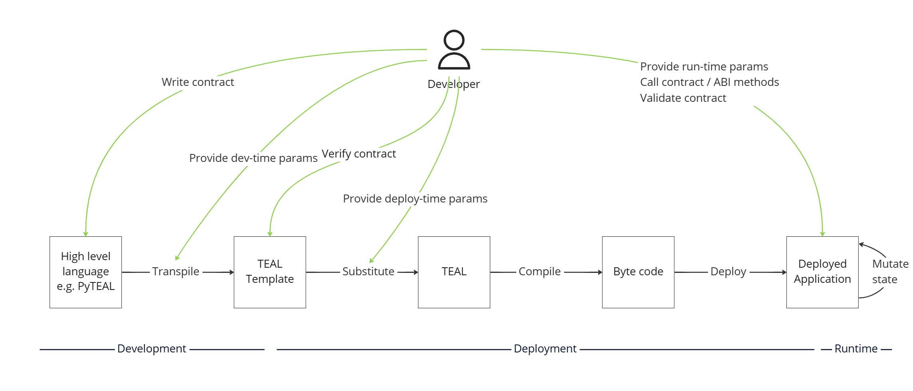

AlgoKit contains advanced smart contract deployment capabilities that allow you to have idempotent (safely retryable) deployment of a named app, including deploy-time immutability and permanence control and TEAL template substitution. This allows you to control the smart contract development lifecycle of a single-instance app across multiple environments (e.g. LocalNet, TestNet, MainNet).
It's optional to use this functionality, since you can construct your own deployment logic using create / update / delete calls and your own mechanism to maintaining app metadata (like app IDs etc.), but this capability is an opinionated out-of-the-box solution that takes care of the heavy lifting for you.
App deployment is a higher-order use case capability provided by AlgoKit Utils that builds on top of the core capabilities, particularly App management.
To see some usage examples check out the automated tests.
The design behind the deployment capability is unique. The architecture design behind app deployment is articulated in an architecture decision record. While the implementation will naturally evolve over time and diverge from this record, the principles and design goals behind the design are comprehensively explained.
Namely, it described the concept of a smart contract development lifecycle:

The App deployment capability provided by AlgoKit Utils helps implement #2 Deployment.
Furthermore, the implementation contains the following implementation characteristics per the original architecture design:
TMPL_{KEY})TMPL_UPDATABLE and TMPL_DELETABLE at deploy-time by convention, if present)This design allows you to have the same deployment code across environments without having to specify an ID for each environment. This makes it really easy to apply continuous delivery practices to your smart contract deployment and make the deployment process completely automated.
AppDeployerThe AppDeployer is a class that is used to manage app deployments and deployment metadata.
To get an instance of AppDeployer you can use either AlgorandClient via algorand.appDeployer or instantiate it directly (passing in an AppManager, AlgorandClientTransactionSender and optionally an indexer client instance):
import { AppDeployer } from '@algorandfoundation/algokit-utils/types/app-deployer'
const appDeployer = new AppDeployer(appManager, transactionSender, indexer)
When AlgoKit performs a deployment of an app it creates metadata to describe that deployment and includes this metadata in an ARC-2 transaction note on any creation and update transactions.
The deployment metadata is defined in AppDeployMetadata, which is an object with:
name: string - The unique name identifier of the app within the creator accountversion: string - The version of app that is / will be deployed; can be an arbitrary string, but we recommend using semverdeletable?: boolean - Whether or not the app is deletable (true) / permanent (false) / unspecified (undefined)updatable?: boolean - Whether or not the app is updatable (true) / immutable (false) / unspecified (undefined)An example of the ARC-2 transaction note that is attached as an app creation / update transaction note to specify this metadata is:
ALGOKIT_DEPLOYER:j{name:"MyApp",version:"1.0",updatable:true,deletable:false}
In order to resolve what apps have been previously deployed and their metadata, AlgoKit provides a method that does a series of indexer lookups and returns a map of name to app metadata via algorand.appDeployer.getCreatorAppsByName(creatorAddress).
const appLookup = algorand.appDeployer.getCreatorAppsByName('CREATORADDRESS')
const app1Metadata = appLookup['app1']
This method caches the result of the lookup, since it's a reasonably heavyweight call (N+1 indexer calls for N deployed apps by the creator). If you want to skip the cache to get a fresh version then you can pass in a second parameter ignoreCache?: boolean. This should only be needed if you are performing parallel deployments outside of the current AppDeployer instance, since it will keep its cache updated based on its own deployments.
The return type of getCreatorAppsByName is AppLookup:
export interface AppLookup {
creator: Readonly<string>
apps: {
[name: string]: AppMetadata
}
}
The apps property contains a lookup by app name that resolves to the current AppMetadata value:
interface AppMetadata {
/** The id of the app */
appId: bigint
/** The Algorand address of the account associated with the app */
appAddress: string
/** The unique name identifier of the app within the creator account */
name: string
/** The version of app that is / will be deployed */
version: string
/** Whether or not the app is deletable / permanent / unspecified */
deletable?: boolean
/** Whether or not the app is updatable / immutable / unspecified */
updatable?: boolean
/** The round the app was created */
createdRound: bigint
/** The last round that the app was updated */
updatedRound: bigint
/** The metadata when the app was created */
createdMetadata: AppDeployMetadata
/** Whether or not the app is deleted */
deleted: boolean
}
An example AppLookup might look like this:
{
"creator": "<creator_address>",
"apps": {
"<app_name>": {
/** The id of the app */
"appId": 1,
/** The Algorand address of the account associated with the app */
"appAddress": "<app_account_address>",
/** The unique name identifier of the app within the creator account */
"name": "<app_name>",
/** The version of app that is / will be deployed */
"version": "2.0.0",
/** Whether or not the app is deletable / permanent / unspecified */
"deletable": false,
/** Whether or not the app is updatable / immutable / unspecified */
"updatable": false,
/** The round the app was created */
"createdRound": 1,
/** The last round that the app was updated */
"updatedRound": 2,
/** Whether or not the app is deleted */
"deleted": false,
/** The metadata when the app was created */
"createdMetadata": {
/** The unique name identifier of the app within the creator account */
"name": "<app_name>",
/** The version of app that is / will be deployed */
"version": "1.0.0",
/** Whether or not the app is deletable / permanent / unspecified */
"deletable": true,
/** Whether or not the app is updatable / immutable / unspecified */
"updatable": true
}
}
//...
}
}
In order to perform a deployment, AlgoKit provides the algorand.appDeployer.deploy(deployment) method.
For example:
const deploymentResult = algorand.appDeployer.deploy({
metadata: {
name: 'MyApp',
version: '1.0.0',
deletable: false,
updatable: false,
},
createParams: {
sender: 'CREATORADDRESS',
approvalProgram: approvalTealTemplateOrByteCode,
clearStateProgram: clearStateTealTemplateOrByteCode,
schema: {
globalInts: 1,
globalByteSlices: 2,
localInts: 3,
localByteSlices: 4,
},
// Other parameters if a create call is made...
},
updateParams: {
sender: 'SENDERADDRESS',
// Other parameters if an update call is made...
},
deleteParams: {
sender: 'SENDERADDRESS',
// Other parameters if a delete call is made...
},
deployTimeParams: {
// Key => value of any TEAL template variables to replace before compilation
VALUE: 1,
},
// How to handle a schema break
onSchemaBreak: OnSchemaBreak.Append,
// How to handle a contract code update
onUpdate: OnUpdate.Update,
// Optional execution control parameters
populateAppCallResources: true,
})
This method performs an idempotent (safely retryable) deployment. It will detect if the app already exists and if it doesn't it will create it. If the app does already exist then it will:
It will automatically add metadata to the transaction note of the create or update transactions that indicates the name, version, updatability and deletability of the contract. This metadata works in concert with appDeployer.getCreatorAppsByName to allow the app to be reliably retrieved against that creator in it's currently deployed state. It will automatically update it's lookup cache so subsequent calls to getCreatorAppsByName or deploy will use the latest metadata without needing to call indexer again.
deploy also automatically executes template substitution including deploy-time control of permanence and immutability if the requisite template parameters are specified in the provided TEAL template.
The first parameter deployment is an AppDeployParams, which is an object with:
metadata: AppDeployMetadata - determines the deployment metadata of the deploymentcreateParams: AppCreateParams | AppCreateMethodCall - the parameters for an app creation call (raw or ABI method call)updateParams: Omit<AppUpdateParams | AppUpdateMethodCall, 'appId' | 'approvalProgram' | 'clearStateProgram'> - the parameters for an app update call (raw or ABI method call) without the appId, approvalProgram or clearStateProgram, since these are calculated by the deploy methoddeleteParams: Omit<AppDeleteParams | AppDeleteMethodCall, 'appId'> - the parameters for an app delete call (raw or ABI method call) without the appId, since this is calculated by the deploy methoddeployTimeParams?: TealTemplateParams - allows automatic substitution of deploy-time TEAL template variables
TealTemplateParams is a key => value object that will result in TMPL_{key} being replaced with value (where a string or Uint8Array will be appropriately encoded as bytes within the TEAL code)onSchemaBreak?: 'replace' | 'fail' | 'append' | OnSchemaBreak - determines what should happen if a breaking change to the schema is detected (e.g. if you need more global or local state that was previously requested when the contract was originally created)onUpdate?: 'update' | 'replace' | 'fail' | 'append' | OnUpdate - determines what should happen if an update to the smart contract is detected (e.g. the TEAL code has changed since last deployment)existingDeployments?: AppLookup - optionally allows the app lookup retrieval to be skipped if it's already been retrieved outside of this AppDeployer instanceignoreCache?: boolean - optionally allows the lookup cache to be ignored and force retrieval of fresh deployment metadata from indexerSendParams - transaction execution control parametersdeploy is idempotent which means you can safely call it again multiple times and it will only apply any changes it detects. If you call it again straight after calling it then it will do nothing.
When compiling TEAL template code, the capabilities described in the above design are present, namely the ability to supply deploy-time parameters and the ability to control immutability and permanence of the smart contract at deploy-time.
In order for a smart contract to opt-in to use this functionality, it must have a TEAL Template that contains the following:
TMPL_{key} - Which can be replaced with a number or a string / byte array which wil be automatically hexadecimal encoded (for any number of {key} => {value} pairs)TMPL_UPDATABLE - Which will be replaced with a 1 if an app should be updatable and 0 if it shouldn't (immutable)TMPL_DELETABLE - Which will be replaced with a 1 if an app should be deletable and 0 if it shouldn't (permanent)If you passed in a TEAL template for the approvalProgram or clearStateProgram (i.e. a string rather than a Uint8Array) then deploy will return the compilation result of substituting then compiling the TEAL template(s) in the following properties of the return value:
compiledApproval?: CompiledTealcompiledClear?: CompiledTealTemplate substitution is done by executing algorand.app.compileTealTemplate(tealTemplateCode, templateParams?, deploymentMetadata?), which in turn calls the following in order and returns the compilation result per above (all of which can also be invoked directly):
AppManager.stripTealComments(tealCode) - Strips out any TEAL comments to reduce the payload that is sent to algod and reduce the likelihood of hitting the max payload limitAppManager.replaceTealTemplateParams(tealTemplateCode, templateParams) - Replaces the templateParams by looking for TMPL_{key}AppManager.replaceTealTemplateDeployTimeControlParams(tealTemplateCode, deploymentMetadata) - If deploymentMetadata is provided, it allows for deploy-time immutability and permanence control by replacing TMPL_UPDATABLE with deploymentMetadata.updatable if it's not undefined and replacing TMPL_DELETABLE with deploymentMetadata.deletable if it's not undefinedalgorand.app.compileTeal(tealCode) - Sends the final TEAL to algod for compilation and returns the result including the source map and caches the compilation result within the AppManager instanceBelow is a sample in Algorand Python SDK that demonstrates how to make an app updatable/deletable smart contract with the use of TMPL_UPDATABLE and TMPL_DELETABLE template parameters.
# ... your contract code ...
@arc4.baremethod(allow_actions=["UpdateApplication"])
def update(self) -> None:
assert TemplateVar[bool]("UPDATABLE")
@arc4.baremethod(allow_actions=["DeleteApplication"])
def delete(self) -> None:
assert TemplateVar[bool]("DELETABLE")
# ... your contract code ...
Alternative example in Algorand TypeScript SDK:
// ... your contract code ...
@baremethod({ allowActions: 'UpdateApplication' })
public onUpdate() {
assert(TemplateVar<boolean>('UPDATABLE'))
}
@baremethod({ allowActions: 'DeleteApplication' })
public onDelete() {
assert(TemplateVar<boolean>('DELETABLE'))
}
// ... your contract code ...
With the above code, when deploying your application, you can pass in the following deploy-time parameters:
myFactory.deploy({
... // other deployment parameters
updatable: true, // resulting app will be updatable, and this metadata will be set in the ARC-2 transaction note
deletable: false, // resulting app will not be deletable, and this metadata will be set in the ARC-2 transaction note
})
When deploy executes it will return a comprehensive result object that describes exactly what it did and has comprehensive metadata to describe the end result of the deployed app.
The deploy call itself may do one of the following (which you can determine by looking at the operationPerformed field on the return value from the function):
create - The smart contract app was createdupdate - The smart contract app was updatedreplace - The smart contract app was deleted and created again (in an atomic transaction)nothing - Nothing was done since it was detected the existing smart contract app deployment was up to dateAs well as the operationPerformed parameter and the optional compilation result, the return value will have the AppMetadata fields present.
Based on the value of operationPerformed there will be other data available in the return value:
create, update or replace then it will have the relevant SendAppTransactionResult valuesreplace then it will also have {deleteReturn?: ABIReturn, deleteResult: ConfirmedTransactionResult} to capture the result of the deletion of the existing app